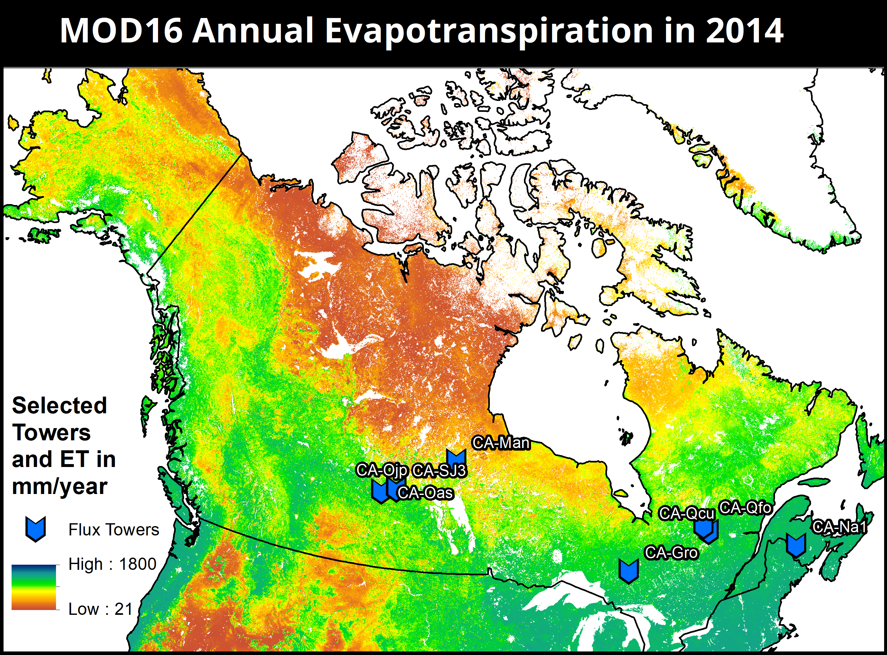

This project aimed to validate the MOD16 evapotranspiration (ET) product, which is generated from MODIS data using an algorithm developed by Mu et al. (2011). I studied its accuracy at sites in Canada's boreal forest. ET is measured directly at flux tower sites, of which I have selected eight that are mapped below:
While the above map shows the ET product for all of 2014, I am comparing the MOD16 8-day products to flux tower measurements. Data for the selected flux towers is available in CSV format, gathered from http://ameriflux.lbl.gov. To compare MOD16 estimates to flux tower measurements of ET, I developed a python module that geoprocesses the MOD16 rasters and fills gaps in the flux tower measurements. Comparison is then made via time-series graphs and linear regression. The code below displays how the MOD16 rasters are bulk-downloaded. In this example, all the MOD16 raster files that cover a selected tower (CA-Qcu in the above map) are downloaded.
from bs4 import BeautifulSoup
import requests
class download_modis:
'''
this class downloads modis data
the __init__ function takes a list of years and a list of julian days
julian days should be strings and should have three digits, with leading
zeros if jd < 100
years can be int or str
the function can be applied to one tile at a time
it returns the tile folder where all the new rasters were saved
'''
def __init__(self, years, days, tile, out_folder):
self.years = years
self.days = days
self.tile = tile
self.out_folder = out_folder
def download_mod16(self):
#file type we want to download
ext = 'hdf'
base_url = r'http://files.ntsg.umt.edu'
for year in self.years:
for day in self.days:
url = r'http://files.ntsg.umt.edu/data/NTSG_Products/MOD16/MOD16A2.105_MERRAGMAO/Y{}/D{}/'.format(str(year), day)
page = requests.get(url).text
#parses the url's html file to find links to the rasters
soup = BeautifulSoup(page, 'html.parser')
#makes a list of the urls for the hdf files
files = [base_url + node.get('href') for node in soup.find_all('a') if node.get('href').endswith(ext)]
for file in files:
if file.split(".")[-4] == self.tile:
r = requests.get(file, allow_redirects = True)
#save file to outpath
tile_filepath = self.out_folder + r'\{}\{}'.format(self.tile, file.split("/")[-1])
open(tile_filepath, 'wb').write(r.content)
print("wrote to {}".format(tile_filepath))
@property
def mod16_folder(self):
return self.out_folder + r'\{}'.format(self.tile)
#Here are lines that show how I execute the code
#downloading rasters for h13v04 from 2004 to 2010
ca_qcu_years = [i for i in range(2004, 2011)]
#creates a list of the julian days that correspond to MOD16 8day periods
ca_qcu_days = [str(i).zfill(3) for i in range(1, 365, 8)]
#sets parameters needed to download the right files
ca_qcu_rasters = download_modis(ca_qcu_years, ca_qcu_days, "h13v04",
r'C:\Users\Devin Simmons\Desktop\GEOL393\figure_for_rd\gis_things\mod16_tiles')
#actually downloads these files
ca_qcu_rasters.download_mod16()
Next, I wrote a script to determine the MOD16 ET estimates for the selected flux towers. This invovled converting the MOD16 HDF files to rasters that could be processed in ArcPy, clipping these rasters to lie within a certain radius of the tower, and then averaging the values of the pixels left over after the clip occurred. The code sample below performs these geoprocessing actions at site CA-Qcu for the rasters that were downloaded earlier.
import arcpy
arcpy.env.overwriteOutput = True
class modis_et:
'''
initalization of the class requires a shapefile with flux towers, a tower name,
and an output folder
the tower in question is identified with the tower_name string.
tower_name should equal the towers fluxnetid
'''
def __init__(self, flux_towers, tower_name, output_env):
self.flux_towers = flux_towers
self.tower_name = tower_name
self.output_env = output_env
'''
buffer inputs should be floats and the units should be meters
this function buffers around the tower using the first_buffer, clips the
raster to the extent of the buffer
'''
def make_buffer(self, first_buffer):
self.first_buffer = first_buffer
#first this turns the tower shapefile into a layer
#then it selects the specified tower and makes a layer out of it
tower_layer = arcpy.MakeFeatureLayer_management(self.flux_towers, "tower_layer")
tower = arcpy.SelectLayerByAttribute_management(tower_layer, "NEW_SELECTION",
''' "fluxnetid" = '{}' '''.format(self.tower_name))
#makes a layer out of the chosen tower, buffers it, creates a shapefile of the buffer
arcpy.CopyFeatures_management(tower, self.output_env + r"/chosen_tower.shp")
tower = self.output_env + r"/chosen_tower.shp"
self.buffer_fc = self.output_env + r"/buffered_tower.shp"
arcpy.Buffer_analysis(tower, self.buffer_fc,
str(self.first_buffer) + " Meters")
'''
clips raster to the specified buffer for the flux tower
'''
def clip_raster(self, mod16_raster):
self.mod16_raster = mod16_raster
#this extracts the julian day the raster starts from the file name
#it looks better this way
self.julian_day = self.mod16_raster[9:16]
self.mod16_ET = self.output_env + r"/{}".format(self.julian_day + "ET.tif")
#extracts just the ET layer from the MOD16 hdf. this is located at index 0
arcpy.ExtractSubDataset_management(self.mod16_raster, self.mod16_ET, "0")
self.clipped_et = self.mod16_ET[0:-4] + "_clip.tif"
arcpy.Clip_management(self.mod16_ET,
'0 0 0 0', self.clipped_et,
self.buffer_fc, '#', "ClippingGeometry")
'''
returns mean et in millimeters
'''
@property
def mean_et(self):
mean = arcpy.GetRasterProperties_management(self.clipped_et, "MEAN")
return float(mean.getOutput(0))/10
#Here are lines that show how I execute the code
in_towers = r'C:\Users\Devin Simmons\Desktop\GEOL393\GIS\MOD16_2014_ET_Annual\flux_towers\fluxnet_sites\fluxnet_sites.shp'
in_rasters = r'C:\Users\Devin Simmons\Desktop\GEOL393\figure_for_rd\gis_things\mod16_tiles\h13v04'
out_folder = r"C:\Users\Devin Simmons\Desktop\GEOL393\figure_for_rd\gis_things\clip_features"
#performs analysis of rasters at CA-Qcu
test1 = modis_et(in_towers, "CA-Qcu", out_folder)
test1.make_buffer(1692)
#without these lines the program had trouble reading the HDF files
arcpy.env.workspace = in_rasters
rasters = arcpy.ListRasters("*", "HDF")
mod16_values = {}
#clips the raster to the tower, determines its ET value, adds the julian day
#that the 8 day period starts to a dictionary as a key with its ET value as the value
for raster in in_rasters:
test1.clip_raster(raster)
print("clipped " + raster)
mod16_values[test1.julian_day] = test1.mean_et
Next, the script processes the flux tower data CSVs and analyzes how MOD16 compares to the flux tower direct measures of ET. This process involves filling gaps in data and determining error, which requires hundreds of lines of code. As such, I will not include it in its entirety on this page, but I will show some snippets. The entirety of this code can be found on my github. Below is a figure that displays a linear regression of flux tower ET measurements compared to MOD16 estimates, made using matplotlib and analyzed with scipy. In addition, the necessary code is shown as well.
import flux_module
#csv with flux tower data, downloaded from ameriflux website
test_file = r"C:\Users\Devin Simmons\Desktop\GEOL393\flux_towers\figure_for_1st_pres\AMF_CA-Qcu_BASE_HH_1-1.csv"
#reads in the flux tower csv file
test_flux = flux_module.flux_reader(test_file)
test_flux.et_by_day()
#creates data dictionary that contains 8-day flux measurement periods that
#can be compared to MOD16 8-day period. range represents the range of
#years analyzed
test_flux.valid_8day_by_year([i for i in range(2004, 2011)])
#creates the linreg plot. mod16 values is the dictionary that is ultimately
#filled by instantiating the modis_et class, as shown above. flux tower values
#were generated in the line above
test_flux.linreg_et_plot(mod16_values, [i for i in range(2005, 2011)])
In addition, the flux_module has functions that make summary tables and time series graphs. Below is a time series and the code that created it:
import flux_module
#csv with flux tower data, downloaded from ameriflux website
test_file = r"C:\Users\Devin Simmons\Desktop\GEOL393\flux_towers\figure_for_1st_pres\AMF_CA-Qcu_BASE_HH_1-1.csv"
#reads in the flux tower csv file
test_flux = flux_module.flux_reader(test_file)
test_flux.et_by_day()
#gets data dictionary that contains 8-day flux measurement periods that
#can be compared to MOD16 8-day period. range represents the range of
#years analyzed
in_flux = test_flux.valid_8day_by_year([i for i in range(2004, 2011)])
#creates a time series plot for each year in the range 204 - 2010.
#mod16 values is the dictionary that is ultimately
#filled by instantiating the modis_et class, as shown above.
for i in range(2004, 2011):
test_flux.time_series_plot(in_flux, mod16_values, str(i))
plt.show()
plt.gcf().clear()
My ultimate hypothesis was to test whether MOD16 showed a longitudinal spatial variation in its accuracy. To determine MOD16 accuracy, I calculated three different its bias, percent bias, and root mean square error compared to the flux tower measurements of ET. I then plotted these measures compared to flux tower longitude and determined the correlation. There was no significant correlation between any of these measures and flux tower longitude. However, I then assessed MOD16 accuracy based on seasons, and found that there is a significant negative correlation between MOD16 bias/percent bias and longitude. This relationship is visualized below. Percent bias is an average of how "far off" MOD16 is from ground-measured values of ET for each 8-day period, as a proportion of the the measured ET value.